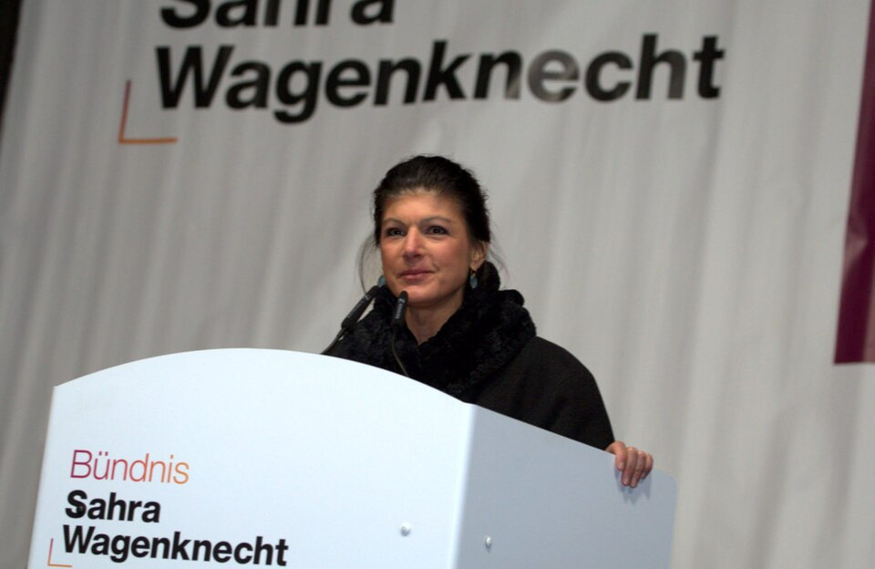
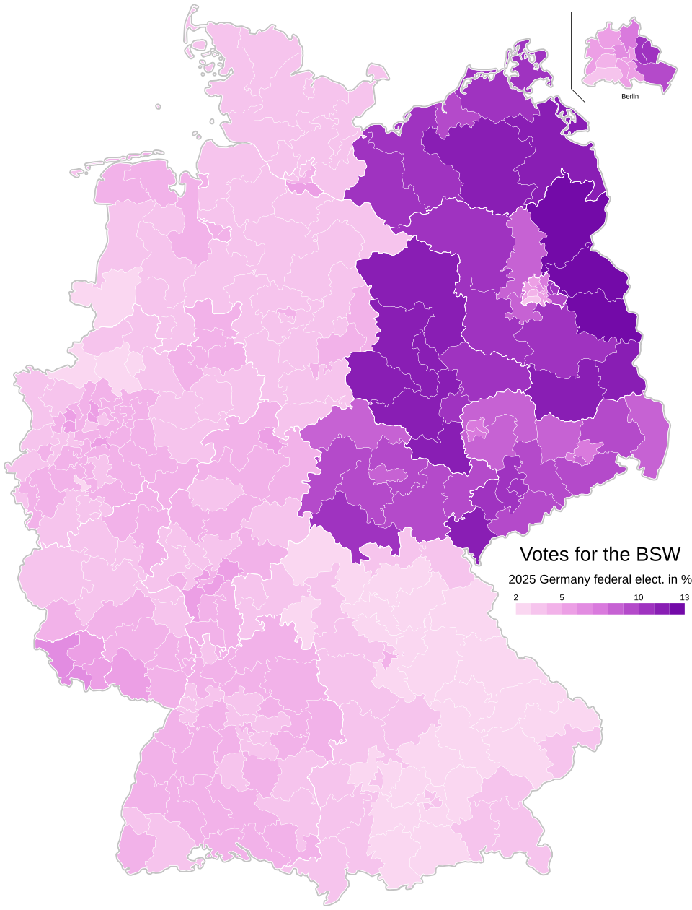

Alternativa para Alemania (AFD) ha hecho historia este pasado domingo al arrasar en las elecciones de Sajonia-Anhalt con un 43,8% de los votos. El partido ultraconservador ha logrado su mayor victoria hasta la fecha y el único consuelo que ha quedado para sus detractores ha sido su incapacidad de alcanzar la mayoría absoluta. Sin embargo, el cortafuegos que los partidos alemanes han impuesto contra el partido nativista puede ser roto por primera vez. La rojiparda Alianza Sahra Wagenknecht (BSW) ha extendido la mano a AFD para la creación de un gobierno «suprapartidista» que busque acuerdos en sus puntos en común como la migración, la transición energética o la relación con Rusia. Casi un siglo después, la ultraderecha puede volver a tocar el poder en Alemania, pero esta vez con la ayuda de una autodenominada socialista.
Sahra Wagenknecht
La lideresa de la alianza que lleva su nombre es Sahra Wagenknecht. Wagenknecht se unió brevemente al partido único de la Alemania Oriental antes de la unificación y participó en sus sucesores hasta acabar en La Izquierda, el principal partido socialista de Alemania. Aunque inicialmente representó al ala más radical del partido, sus posiciones económicas cambiaron distanciandose del comunismo, pero sus choques con las posiciones mayoritarias de sus compañeros no finalizaron ahí. La política alemana criticó la vacunación contra la COVID-19, la aceptación de refugiados sirios y las sanciones impuestas a Rusia por la invasión a Ucrania.

Sahra Wagenknecht en un atril de su partido
Autor: Michael Lucan
El constante descenso en apoyos al partido (no logrando alcanzar el umbral mínimo del 5% en las elecciones de 2021) provocó que Sahra Wagenknecht rompiera con él en 2023. Frente a las posiciones interseccionales de La Izquierda, Wagenknecht propuso centrarse únicamente en cuestiones económicas en detrimento de la lucha contra la discriminación. Para ello, fundó la Alianza Sahra Wagenknecht-Por la Razón y la Justicia con un programa en contra de la transición energética, del apoyo militar y económico a Ucrania; de los derechos de las personas transgéneros, de la aceptación de inmigrantes y de la Unión Europea. Sin embargo, estas posiciones tradicionales de la derecha europea coexisten con un programa económico centrado en la redistribución de la riqueza, el intervencionismo económico y la nacionalización de industrias claves. Este programa sincrético es el que le ha ganado el apelativo “rojipardo”.
Una corriente marginal
El rojipardismo o conservadurismo de izquierdas hace referencia a un conjunto de posiciones que mezclan posiciones tradicionalmente conservadoras en temas sociales y posiciones izquierdistas en temas económicos. Sus defensores suelen defender que la defensa de los derechos de las minorías (aborto, matrimonio igualiatario, inmigración legal…) aliena a una clase trabajadora cuyas principales preocupaciones residen en la economía.
Estas posiciones son las mayoritarias en los regímenes comunistas de partido único donde el progresismo es visto como una “degeneración burguesa”, pero en las democracias liberales rara vez han tenido relevancia. Sin embargo, en los antiguos países comunistas del este de Europa, esta herencia se ha dejado ver en sus principales partidos de izquierda.
El eslovaco Dirección fue expulsado en 2023 del Partido de los Socialistas Europeos debido a su intención de formar una coalición con un partido ultraconservador y rusófilo. Además, el partido, que desde que alcanzó el poder solo ha estado en la oposición en dos legislaturas, tiene un historial de legislación islamófoba, anti-gitanista y anti-LGBT. De parecida forma, el Partido de los Socialistas de la República de Moldavia, Bulgaria Progresista o el Partido Comunista de Grecia han defendido políticas de justicia económica mientras combaten posiciones sociales progresistas.
Tras las elecciones europeas de 2024, BSW intentó formar un grupo parlamentario de izquierda conservadora junto al italiano Movimiento 5 Estrellas. Sin embargo, el rechazo de este partido imposibilitó la creación de este grupo y la mayoría de los partidos rojipardos en el Parlamento Europeo están actualmente no afiliados a ningún grupo.
Una potencia en el este
El año pasado algunos dieron a la Alianza Sahra Wagenknecht por muerta. Tras rondar el 8% de los votos en las encuestas para las elecciones federales, el partido se quedó a dos décimas del umbral mínimo de 5% de votos, quedándose sin representación mientras La Izquierda a quiénes venían a sustituir logró un 8,8% de votos, resultado que no alcanzaban en casi una década. Sin embargo, han logrado mantener sus feudos en el este del país y el reciente resultado en Sajonia-Anhalt demuestra que siguen siendo un actor a contar en la región.

Porcentaje de voto a BSW en las elecciones federales de 2025
Autor: Costamiri
Este proyecto político que tan raro suena en el oeste de Europa tiene la llave para el próximo gobierno del estado federado. Mientras no aparezcan transfugas, tan solo falta comprobar si romperán el tabú que ningún otro partido con representación parlamentaria se ha atrevido hasta la fecha.